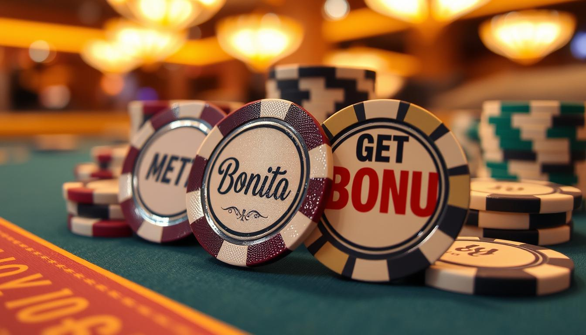

O Weiss Bet Casino tem se destacado no mundo dos jogos online desde sua fundação em 2023. Com uma ampla gama de jogos, bônus generosos e métodos de pagamento seguros, ele se tornou uma escolha popular entre os apostadores. Neste artigo, exploraremos as vantagens do Weiss Bet Casino, seus bônus e promoções, métodos de depósito e retirada, além de outros aspectos importantes.
O Weiss Bet Casino oferece diversas vantagens que atraem jogadores de todo o mundo:
O Weiss Bet Casino é conhecido por seus bônus atraentes. Aqui estão alguns dos principais bônus disponíveis:
|
Tipo de Bônus |
Descrição |
Requisitos de Aposta |
|
Bônus de Boas-Vindas |
Até 300% nos três primeiros depósitos + 200 rodadas grátis |
45x (bônus), 55x (rodadas) |
|
Bônus Sem Depósito |
15 Tokens WEFT ao criar uma conta |
N/A |
|
Promoções Diárias |
Ofertas diárias que incluem rodadas grátis e aumentos nos limites de aposta |
Variável |
|
Programa de Fidelidade |
Sistema com 30 níveis que oferece cashback e outras recompensas conforme a atividade do jogador |
N/A |
O bônus de boas-vindas do Weiss Bet é um dos mais generosos do mercado. Os novos jogadores podem receber até 300% sobre seus três primeiros depósitos. Veja como funciona:
Os requisitos de aposta são de 45x para o bônus e 55x para as rodadas grátis, que devem ser atendidos em cinco dias.
Além do bônus de boas-vindas, o Weiss Bet oferece promoções diárias que permitem aos jogadores ganhar prêmios adicionais, como rodadas grátis e aumentos nos limites de apostas, incentivando a participação contínua.
No momento, não é necessário usar códigos promocionais para ativar os bônus. No entanto, é sempre bom verificar se há novas ofertas ou códigos disponíveis diretamente no site do cassino.
O Weiss Bet Casino oferece uma variedade de métodos seguros para depósito e retirada:
Os depósitos são processados instantaneamente, enquanto as retiradas podem levar até 5 dias úteis, dependendo do método escolhido.
O programa de fidelidade do Weiss Bet permite que os jogadores acumulem pontos enquanto jogam, que podem ser trocados por recompensas. Ao subir de nível, os jogadores têm acesso a benefícios melhores, como cashback semanal e rodadas grátis.
Uma característica única do Weiss Bet Casino é o uso do WEFT Token, uma moeda digital para ser usada dentro da plataforma. Os jogadores podem ganhar tokens e utilizá-los em promoções ou convertê-los em dinheiro real.
O Weiss Bet Casino se destaca por suas ofertas atrativas e um ambiente seguro para os apostadores. Com uma vasta gama de jogos, bônus generosos e um sistema eficaz de suporte ao cliente, ele se posiciona como uma excelente opção para quem busca diversão e segurança nas apostas online. Se você está procurando um novo cassino para explorar, o Weiss Bet pode ser a escolha perfeita!